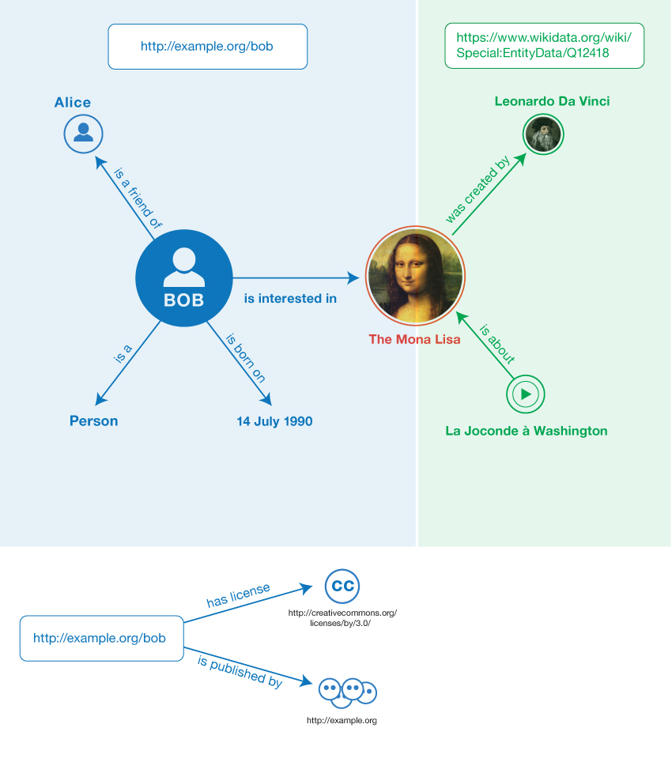

The Resource Description Framework (RDF) is a language for
representing information about resources in the World Wide
Web. This primer is designed to provide the reader with the basic
knowledge required to effectively use RDF. It introduces the basic
concepts of RDF and shows concrete examples of the use of RDF.
Status of This Document
This section describes the status of this document at the time of its publication.
Other documents may supersede this document. A list of current W3C publications and the
latest revision of this technical report can be found in the W3C technical reports index at
http://www.w3.org/TR/.
The RDF Working Group expects this document to become a Working
Group Note.
This document was published by the RDF Working Group as a First Public Working Draft.
This document is intended to become a W3C Recommendation.
If you wish to make comments regarding this document, please send them to
public-rdf-comments@w3.org
(subscribe,
archives).
All comments are welcome.
Publication as a First Public Working Draft does not imply endorsement by the W3C
Membership. This is a draft document and may be updated, replaced or obsoleted by other
documents at any time. It is inappropriate to cite this document as other than work in
progress.
This primer is an informative document. The
purpose is to give a light-weight overview of RDF 1.1.
Secs. 3-5 can be used as a minimalist introduction into the key
elements of RDF. Changes between RDF 1.1
and RDF 1.0 (2004 version) are summarized in the separate document "What's New in RDF
1.1" [RDF11-NEW].
The Resource Description Framework (RDF) is a framework for
describing information about resources in the World Wide Web,
such as author and modification time of a
Web page or copyright and licensing information of a Web video.
RDF is intended for situations in which information on the Web needs to
be processed by applications, rather than being only displayed to
people. RDF provides a common framework for expressing this
information so it can be exchanged between applications without
loss of meaning. Since it is a common framework, application
designers can leverage the availability of common RDF parsers and
processing tools. The ability to exchange information between
different applications means that the information may be made
available to applications other than those for which it was
originally created.
In particular RDF can be used to publish and interlink data on the Web.
For example retrieving http://www.example.org/bob
could provide data about Bob, including the fact that he
knows Alice, as identified by her IRI.
Retrieving Alice's IRI could then provide more data about her, including links
to other datasets for her friends, interests, etc. A person or
an automated process can then follow such links and aggregate data about these
various things. Such uses of RDF are often
qualified as Linked Data [LINKED-DATA].
Note
An IRI is an "International Resource Identifier". See Sec. 3.2 for details.
This document is not normative and does not give a complete
account of RDF 1.1. Normative
specifications of RDF can be found in the following documents:
A document describing the basic concepts underlying RDF, as
well as abstract syntax ("RDF Concepts and Abstract Syntax")
[RDF11-CONCEPTS]
A document describing the formal model-theoretic semantics
of RDF ("RDF Semantics") [RDF11-MT]
N-Triples [N-TRIPLES] and N-Quads [N-QUADS]
(line-based exchange formats)
RDF/XML [RDF11-XML] (the original 2004 syntax, updated
for RDF 1.1)
A document describing RDF Schema [RDF11-SCHEMA], which
provides a data-modeling vocabulary for RDF data.
2. Why use RDF?
The following illustrates various different uses of RDF, aimed
at different communities of practice.
Adding machine-readable information to web pages using for example
the popular schema.org
vocabulary, enabling them to be displayed
in an enhanced format on search engines or to be processed automatically
by third-party applications.
Enriching a dataset by linking it to third-party
datasets. For example a dataset about
paintings could be enriched by linking them to the corresponding
artists in Wikidata,
therefore giving access to a wide range of information about
them and related resources.
Interlinking API feeds, making sure that clients can easily
discover how to access more information.
Using the datasets currently published as Linked Data
[LINKED-DATA], for example
building aggregations of data around specific topics.
Building distributed social networks by interlinking RDF
descriptions of people
across multiple web sites.
Providing a standard-compliant way for exchanging data
between RDF databases.
Interlinking various datasets within an organisation,
enabling cross-dataset queries to
be performed using SPARQL [SPARQL11-OVERVIEW].
3. RDF Data Model
3.1 Triples
RDF allows us to make statements about resources.
The format of these statements is simple. It always
has the following form:
<subject> <predicate> <object>
An RDF statement represents a relationship between two resources.
The subject and the object
represent the two resources being
related; the predicate represents the nature of their
relationship. The relationship is phrased in a directional way
(from subject to object) and is called in RDF a
property. Because RDF statements consist of
three elements they are called triples.
Informally speaking, RDF allows us to make
statements of the form:
Example 1
<Bob> <is a> <person>.
<Bob> <is a friend of> <Alice>.
<Bob> <is born on> <the 4th of July 1990>.
<Bob> <is interested in> <the Mona Lisa>.
<The Mona Lisa> <was created by> <Leonardo da Vinci>.
<The video 'La Joconde à Washington'> <is about> <the Mona Lisa>
Resources typically occur in multiple
triples, for example Bob and the Mona Lisa painting in the examples above. We
can therefore visualise triples as a connected
graph. Graphs consists
of nodes and arcs. The subjects and
objects of the triples make up the nodes in the graph; the
predicates form the arcs. Fig. 1
shows the graph resulting from the sample triples.
Fig. 1Informal graph of the sample triples
The example above does not constitute actual RDF
syntax; it is just intended to provide an informal
view of the notion of an RDF graph.
Note
The RDF Data Model is described in this section
in the form of an "abstract syntax", i.e. a data model that is independent of a
particular encoding. Different encodings may
produce exactly the same graph from the perspective of the
abstract syntax. The semantics of RDF graphs [RDF11-MT] are defined in
terms of this abstract syntax. Concrete RDF syntax is introduced
later in Sec. 5.
In the next three subsections we discuss the three types of RDF data
that occur in triples: IRIs, literals and blank nodes.
3.2 IRIs
The abbreviation IRI is short for "International Resource
Identifier". An IRI
identifies a Web resource. The notion of IRI is a
generalization of URI (Uniform Resource Identifier), allowing
non-ASCII characters to be used in the IRI character string. IRIs are specified
in RFC 3987 [RFC3987].
IRIs can appear in all three positions of a triple.
IRIs can be used to identify both documents
(e.g. a Web page) and things (e.g. a person).
For example, the IRI for the "Mona Lisa" painting in
Wikidata is:
RDF is agnostic about what the IRI stands for. However,
IRIs may be given meaning by particular vocabularies or
conventions. For example, DBpedia uses IRIs of the form
http://dbpedia.org/resource/Name to denote the thing
described by the corresponding Wikipedia article.
RDF vocabularies are discussed in more detail in
Sec. 4.
3.3 Literals
Literals
are basic values that are not IRIs. Examples of literals include
strings such as "La Joconde", dates such as "the 4th of July, 1990"
and numbers such as "3.14159".
Literals are associated with a datatype enabling such
values to be parsed and interpreted correctly.
String literals can optionally be associated with a language
tag. For example "Léonard de Vinci" could
be associated with the "fr" language tag and "李奥纳多·达·文西"
with the "zh" language tag.
Note
The RDF data model assigns the special datatype
rdf:langString to language-tagged literals.
Note
The 2004 version of RDF contained the notion of a
"plain literal" with no datatype. This feature has been removed, as the
distinction between "plain" literals and literals with datatype
string was confusing. RDF syntaxes such as Turtle allow
writing literals without an explicit datatype and treat this
as syntactic sugar for a string datatype.
Literals may only appear in the object position of a triple.
The RDF Concepts document provides a (non-exhaustive)
list
of datatypes. This includes many datatypes defined by XML
Schema, such as string, boolean, integer, decimal and date.
3.4 Blank nodes
IRIs and literals together provide the basic material for
writing down RDF statements. In addition, it is sometimes handy
to be able to talk about resources without bothering to use an
identifier. For example, we might want to state that the Mona
Lisa painting has in its background an unidentified tree which
we know to be a cypress tree. Resources such as the unidentified
cypress tree are called "blank
nodes" in RDF. A blank node indicates an un-named
thing. Blank nodes are like simple
variables in algebra; they represent some thing without saying
what their value is.
Blank nodes can appear in the subject and object
position of a triple. They can be used
to denote resources without explicitly naming them with an
IRI.
3.5 Multiple graphs
RDF provides a mechanism to group RDF statements in multiple
graphs and associate each graph with an IRI. Multiple graphs in
an RDF document constitute an
RDF
dataset. An RDF dataset may have multiple named graphs and
at most one default graph (i.e. a graph without a name).
For example, the
statements in the first example
could be grouped in two named
graphs. A first graph could be provided by a social networking
site and identified by http://example.org/bob:
<Bob> <is a> <person>.
<Bob> <is a friend of> <Alice>.
<Bob> <is born on> <the 4th of July 1990>.
<Bob> <is interested in> <the Mona Lisa>.
Note
The IRI associated with the graph is
called the "graph name" in [RDF11-CONCEPTS]. However
RDF 1.1 does not specify a particular semantics for the
relation between the "graph name" and the graph [RDF11-MT].
A second graph could be provided by Wikidata
and identified by
https://www.wikidata.org/wiki/Special:EntityData/Q12418:
<Leonardo da Vinci> <is the creator of> <the Mona Lisa>.
<The video 'La Joconde à Washington'> <is about> <the Mona Lisa>
In the example default (unnamed) graph below we see two triples that
have a graph name as subject:
<http://example.org/bob> <is published by> <http://example.org>.
<http://example.org/bob> <has license> <http://creativecommons.org/licenses/by/3.0/>.
RDF 1.1 doesn't prescribe any specific semantics for
datasets. Possible semantics are described in a separate note
[RDF11-DATASETS]. In this example dataset we assume graph
names represent the source of the RDF data held within the
corresponding graphs, i.e. by retrieving
<http://example.org/bob> we would get access to the four triples
in that graph. In the example default graph we associate provenance
information (publisher, license) with the
<http://example.org/bob> graph.
Note
RDF provides no way to convey this semantic
assumption (i.e., that graph names represent the source of the
RDF data) to other readers of the dataset. Those readers will
need to rely on out-of-band knowledge to interpret the dataset
in the intended way.
Sec. 5.2 provides an example
of concrete syntax for this example.
Note
Multiple graphs are a recent extension of the RDF
data model. In practice, RDF tool builders and
data managers needed a mechanism to talk about subsets of
triples. Multiple graphs were first introduced in the RDF query
language SPARQL. The RDF data model was therefore extended with a notion of
multiple graphs that is closely aligned with SPARQL.
4. RDF Vocabularies
The RDF data model provides a way to make statements about
resources. As we mentioned, this data model does not make any
assumptions about what resource IRIs stand for. In practice, RDF
is typically used in combination with vocabularies or other
conventions that provide semantic information about these
resources.
To support the definition of vocabularies RDF provides
the RDF-Schema language
[RDF11-SCHEMA]. This language allows one to define semantic
characteristics of
RDF data. For example, one can state that the IRI
ex:friendOf can be used as a property and that the
subjects and objects of ex:friendOf triples must be
resources of class ex:Person.
RDF Schema uses the notion of class to
specify categories that can be used to classify resources. The
relation between an instance and its class is modelled through the
type property. For both classes and properties one can create
subtype hierarchies. Type restrictions on the subjects
and objects of particular triples can be defined through
domain respectively range restrictions.
The main modeling
constructs provided by RDF Schema are summarized in the table below:
The syntactic form (second column) is in a prefix
notation wich is discussed in more detail in
Sec. 5.
The fact that the constructs have two different prefixes
(rdf: and rdfs:) is a somewhat annoying
historical artefact, which is preserved for backward
compatibility.
With the help of RDF Schema one can build a model of RDF data. A
simple informal example:
Example 2
<Person> <type> <Class>
<is a friend of> <type> <Property>
<is a friend of> <domain> <Person>
<is a friend of> <range> <Person>
<is a good friend of> <subPropertyOf> <is a friend of>
One of first RDF vocabularies used worldwide was the
"Friend of a Friend" (FOAF)
vocabulary for describing social networks. Other typical examples of RDF
vocabularies are:
The Dublin Core Metadata Initiative maintains a metadata element
set for describing a wide range of resources. The vocabulary provides
properties such as "creator", "publisher" and "title".
Schema.org is a vocabulary developed by a group of major search
providers. The idea is that webmasters can use these terms to markup
webpages, so that search engines understand what the pages are
about.
WordNet is a lexical database of English terms, grouped in sets
of synonyms, with a range of semantic interrelations. W3C make an
RDF version
available of WordNet 2.0, which was one
of the first elements of the Linked
Data Cloud. Similar databases exist for many other languages.
SKOS is a vocabulary for publishing classification schemes
such as terminologies and thesauri on the Web. SKOS is since 2009 a W3C
recommendation and is widely used in the library world. Library of
Congress published its Subject Headings as a SKOS
vocabulary.
For a formal specification of the semantics of the RDF Schema
constructs the reader is referred to
the RDF Semantics document [RDF11-MT]. Users interested in more comprehensive
semantic modeling of RDF data might consider using the OWL
[OWL2-OVERVIEW]. OWL is a RDF vocabulary, so it can be
used in combination with RDF Schema.
5. Writing RDF graphs
Issue 1
We plan to include also one annotated JSON-LD example in this
section.
Many different concrete syntaxes exist for writing down RDF
graphs. However, different encodings of the same graph lead
to exactly the same triples.
In the next two
subsections we show RDF syntax examples using the Turtle and Trig
language, because these two languages are best suited for human
consumption. The final subsection lists the other RDF syntaxes,
which include RDFa (for HTML embedding), JSON-LD (JSON-based syntax),
N-Triples/N-Quads (line-based exchange formats) and RDF/XML. In
Appendix C the
reader can find for each RDF syntax
corresponding examples of the ones in this section.
5.1 Turtle
Turtle [TURTLE] provides a syntax for RDF
graphs, which is relatively convenient for humans. Turtle
introduces a number of syntax shortcuts, such as
support for namespaces, lists and shorthands for datatyped
literals. Turtle provides a trade-off between ease of
writing, ease of parsing and readability. Our
first example (in slightly
extended form) can be
represented in Turtle as follows:
Lines 1-6 contain a number of directives which provide shorthands for
writing down IRIs. In Turtle IRIs are enclosed in angle brackets
(<>). Relative IRIs (such as bob#me on line 8) are
resolved agains a base IRI, specified here in line 1.
Lines 2-6 define IRI prefixes (such as foaf:), which can
be use for prefixed names (such as foaf:Person) instead of full IRIs.
The corresponding IRI is constructed by replacing the prefix with its
corresponding IRI (in this example foaf:Person stands for
<http://xmlns.com/foaf/0.1/Person>).
Lines 8-12 show how Turtle provides a shorthand for a set of
triples with the same subject. Lines 9-12 specify the predicate-object
part of triples with <http://example.org/bob#me> as
subject. The semicolons at the end of lines 9-11 indicate that the
set is not yet complete. A period is used to
signal the end of a Turtle statement.
The triple represented by line 10 looks in
its expanded form like this (see the N-Triples example
for the expanded form of the full example):
Line 9 shows an example of a special kind of syntactic sugar. The triple
should informally be read as "Bob (is) a Person". The
a predicate
is a shorthand for the property rdf:type which models the
instance relation (see Table "RDF Schema
constructs"). The a shorthand is intended to match the human
intuition about rdf:type.
In line 11 we see an example of a literal, in this case a date. The
datatype is appended to the literal through a ^^ delimiter. The date
representation follows the conventions of the XML Schema datatype
date.
Because string literals are so ubiquitous Turtle allows the user to
omit the datatype when writing a string literal. Thus, "Mona
Lisa" in line 15 is equivalent to
"Mona Lisa"^^xsd:string.
The figure below shows the triples resulting from this example.
Fig. 2Graph of the Turtle example
In case of language-tagged strings the tag
appears directly after the string, separated by a @
symbol, e.g. "La Joconde"@fr (the French name of the Mona
Lisa).
Note
For technical reasons the datatype of language-tagged
strings is not xsd:string but
rdf:langString. The
datatype of language-tagged strings is never specified explicitly
in Turtle.
Below is sample Turtle syntax for blank nodes, using the
earlier cypress-tree example:
The term _:x is a blank node. It represents some
unnamed tree depicted in the Mona Lisa painting and belonging to the
"Cypress" class.
The above is by no means a full account of the Turtle syntax. For
more details about the syntax of Turtle the reader is referred to the
Turtle document [TURTLE].
5.2 TriG
The syntax of Turtle supports only the specification of single
graphs without a means for "naming" them. TriG [TRIG] is an
extension to the Turtle syntax enabling the specification of
multiple graphs.
Note
In RDF 1.1 any legal Turtle document is a legal TriG
document. One could view it as one language. The names Turtle and TriG
still exist for historical reasons.
This RDF dataset contains two named graphs. Lines 8 and 16 list
the names of these two graphs. The triples in the named graph are
placed in between matching curly braces (lines 9 & 15, 18 &
28). Optionally you can precede the graph name with the keyword
GRAPH. This may improve readability, but it is mainly
introduced for alignment with SPARQL Update [SPARQL11-OVERVIEW].
The syntax of the triples and of the directives at the top conforms to
the Turtle syntax.
The two triples specified on lines 30-32 are not part of any
named graph. Together they form the default graph of this RDF
dataset.
The figure below shows the triples resulting from this example.

Fig. 3Triples resulting from the TriG example
5.3 Other concrete syntaxes for RDF
Next to Turtle/TriG there are a number of other concrete syntaxes
for RDF data. These syntaxes were developed to cater for specific
application and/or usage needs. The examples given for each of
these syntaxes correspond to the same graph (i.e., the same set of
triples) as the Turtle example (in the case of a single graph, see Fig. 2)or the TriG example
(in the case of multiple graphs, see Fig. 3).
RDFa
RDFa [RDFA-PRIMER] (single-graph example)
can be used to embed RDF data within
HTML documents. This enables, for example, search engines to aggregate
this data when crawling the web and use it to enrich search
results (see, e.g.,
schema.org
and Rich
Snippets).
JSON-LD
JSON-LD [JSON-LD] (single-graph
example, multiple-graphs example)
provides a JSON syntax for RDF graphs and datasets.
JSON-LD can be used to transform JSON documents to RDF with
minimal changes. JSON-LD offers universal identifiers for
JSON objects, a mechanism in which a JSON document can refer to
an object described in another JSON document elsewhere on the
Web, as well as datatype and language handling. JSON-LD
also provides a way to serialize RDF datasets
through the use of the @graph keyword.
N-Triples
N-Triples [N-TRIPLES] ( single-graph example)
provides a simple line-based, plain text way for serializing RDF
graphs. Each line represents
an RDF triple. Its subject, predicate and object are separated
by white space. N-Triples is often used for RDF examples,
exchanging large RDF datasets, and processing large RDF graphs
with line-oriented text processing tools.
N-Quads
N-Quads [N-QUADS] (multiple-graphs example) is
a simple extension to N-Triples enabling the exchange of RDF
datasets. N-Quads adds a fourth
element to each line, capturing the graph IRI of the triple
described on that line.
RDF/XML
RDF/XML [RDF-SYNTAX-GRAMMAR] (single-graph example)
provides an XML syntax for RDF
graphs. RDF/XML was the only normative syntax for RDF when RDF
1.0 was published in 2004.
For more information about these syntaxes consult the references.
6. Semantics of RDF Graphs
RDF is grounded in a formal model-theoretic semantics which is
specified in the RDF
Semantics document [RDF11-MT]. This document
specifies truth-preserving conditions of RDF graphs as
well as valid derivations from RDF graphs. Such logical
consequences are called entailments. For
example, consider the following two statements:
The RDF Semantics document tell us that from this graph it is legal to
derive the following triple:
ex:bob rdf:type foaf:Person .
Note
RDF Semantics distinguishes
a number of different "entailment regimes". The derivation above is
an example of an RDF Schema entailment. For detailed
information about entailment regimes
please consult the RDF Semantics document [RDF11-MT].
The semantics of RDF also tell us that the triple:
ex:bob ex:age "forty"^^xsd:integer .
leads to a logical inconsistency, because the literal does not
abide by the constraints defined for the XML Schema datatype integer.
Note
RDF tools may not recognize all datatypes. As a
minimum, tools are required to support the datatypes for string literals
and language-tagged literals.
Unlike many other data
modeling languages, RDF Schema allows considerable modeling
freedom. For example, the same entity may be used
as both a class and a property. Also, there is no strict separation
between the world of "classes" and of "instances". Therefore, RDF
semantics views the following graph as valid:
The examples in this section are just meant to give the reader
some feeling about what the RDF Semantics brings you. Please consult
[RDF11-MT] for a complete description.
7. RDF Data
RDF allows you to combine triples from any source into a graph
and process it as legal RDF. A large amount of RDF data is
available as part of the Linked
Data [LINKED-DATA] cloud. Datasets are being published and
interlinked on the Web using RDF, and many of them offer a
querying facility through SPARQL [SPARQL11-OVERVIEW]. Examples
of such datasets used in the examples above include:
Europeana, publishing
data about cultural objects from a large number of European
institutions
VIAF, publishing data about
people, works and geographic places from a number of national
libraries and other agencies.
A list of datasets available within the Linked Data cloud is maintained at
datahub.io.
A number of vocabulary terms have become popular for
recording links between RDF data sources. An example is the
sameAs property provided by the OWL vocabulary. This
property can be used to indicate that two IRIs point in fact
to the same resource. This is useful because different publishers
may use different identifiers to denote the same thing. For
example, VIAF (see above) also has an IRI denoting Leonardo da
Vinci. With the help of owl:sameAs we can record this
information:
Such links can be deployed by RDF data-processing
software.
8. More Information
This concludes our brief introduction into RDF. Please consult
the references to get more detailed information. You might also
want to take a look at the W3C Linked Data page.
A. Acknowledgments
Antoine Isaac provided many examples, including the
different syntactic forms. Pierre-Antoine Champin provided the
alternate JSON-LD example. Andrew Wood designed the graph
diagrams. We are grateful for the comments provided by (in
alphabetical order) Thomas Baker, Dan Brickley, Pierre-Antoine
Champin, Sandro Hawke, Patrick
Hayes, Ivan Herman, Markus Lanthaler, and David Wood.
The introduction contains a number of sentences from the
2004 document. For the rest the RDF 1.1 Primer is a completely
new document.
C. Examples of RDF syntaxes
In Sec. 5 the
different concrete syntaxes of RDF are briefly described. Examples are
given only of the Turtle and TriG syntax. This appendix lists
corresponding examples for the other syntaxes listed. The
single-graph examples encode the same graph as the Turtle
example; the mutiple-graphs examples encode the same graph as the Trig
example.
Issue 2
We should consider annotating the examples in this
appendix, thus providing a mini-primer for each syntax.
C.1 RDFa
Single-graph example:
Example 7
01 <div prefix="
02 rdf: http://www.w3.org/1999/02/22-rdf-syntax-ns#
03 foaf: http://xmlns.com/foaf/0.1/
04 wd: http://www.wikidata.org/entity/
05 dcterms: http://purl.org/dc/terms/
06 xsd: http://www.w3.org/2001/XMLSchema#">
07 <div typeof="foaf:Person" about="http://example.org/bob#me">
08 <p>
09 Bob knows <a rel="foaf:knows" href="http://example.org/alice#me">Alice</a>
10 and was born on the <span property="schema:birthDate" datatype="xsd:date">1990-07-04</span>.
11 </p>
12 <p>
13 Bob is interested in <a rel="foaf:topic_interest" resource="wd:Q12418">the Mona Lisa</a>.
14 </p>
15 <div about="wd:Q12418">
16 The <span property="dcterms:title">Mona Lisa</span> was painted by <a rel="dcterms:creator" href="http://dbpedia.org/resource/Leonardo_da_Vinci">Leonardo da Vinci</a>
17 and is the subject of the video <a rev="dcterms:subject" href="http://data.europeana.eu/item/04802/243FA8618938F4117025F17A8B813C5F9AA4D619">'La Joconde à Washington'</a>.
18 </div>
19 </div>
20 </div>